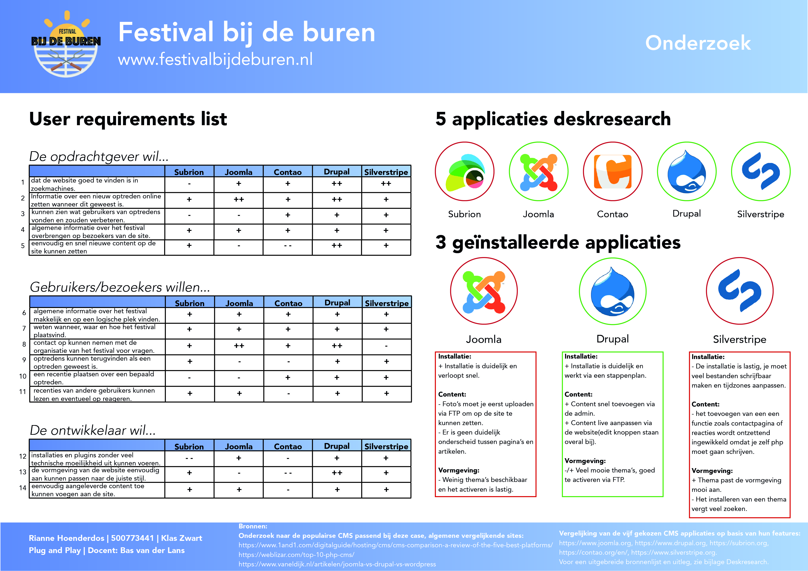

Uitwerking: posters


Werkzaamheden:
Projectduur: 8 weken
Voor het vak Plug and Play moest ik oefenen met het analyseren, installeren en personaliseren van verschillende webapplicaties. Het vak was een combinatie van technische vaardigheden en onderzoeksvaardigheden.
Voor de eindopdracht moesten we een onderzoek doen naar verschillende Content Management Systemen en hun mogelijkheden. Vervolgens heb ik de gene uitgekozen die het best aansloot bij mijn case en die uitgewerkt tot een volledige site. De uitwerking bestond uit een technisch deel en twee posters.
Mijn case heette Festival Bij de Buren: Een festival gebaseerd op een dorpsbarbeque met muziek. Het is uitgegroeid tot jaarlijks 10.000 bezoekers waar jong talent een podium vind. De organisatie wil een online platform waar bezoekers optredens een recentie kunnen geven en naamsbekendheid kan worden gevormd.